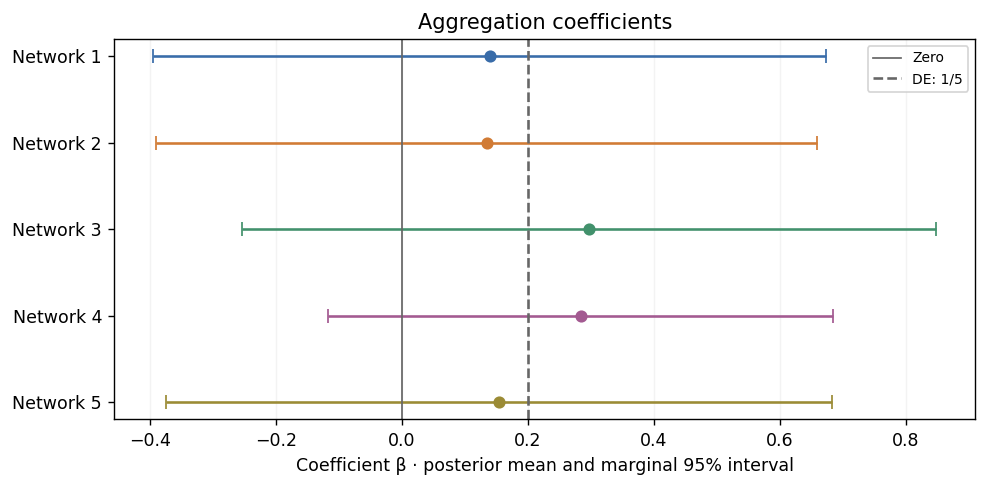
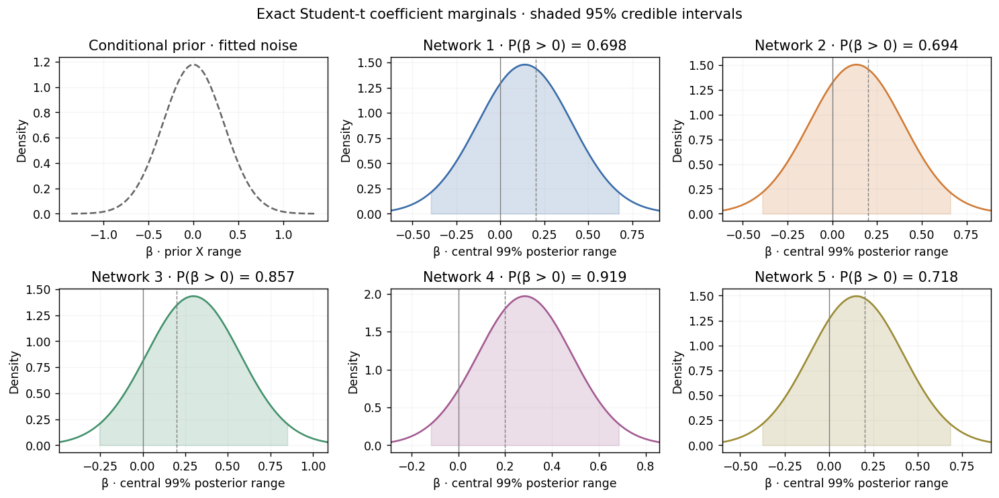
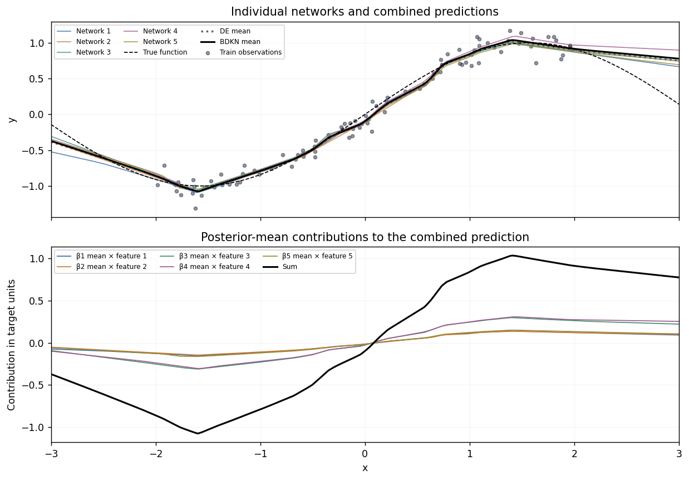
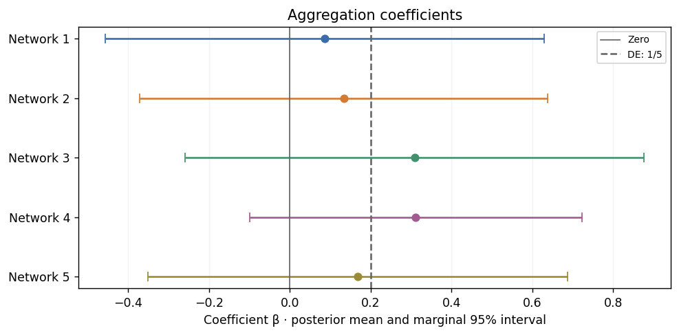
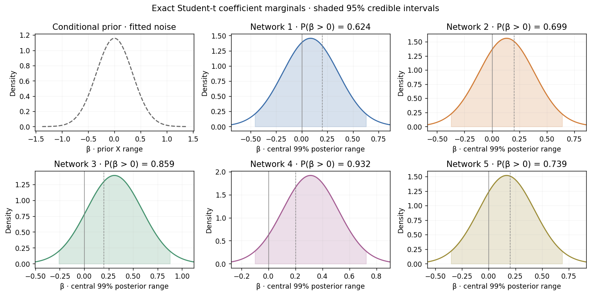
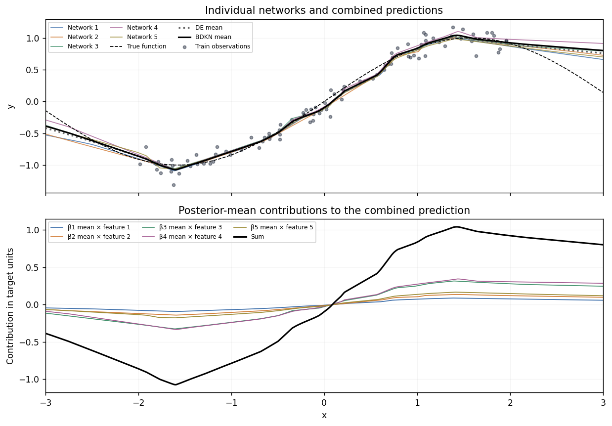

Regression comparison
Download resultsAggregation weights
Coefficients can be negative and need not sum to one. Intervals describe coefficient uncertainty; the dashed reference is DE’s fixed 1/H weight.
BDKN


Each density panel uses its own X range for readability; coefficient intervals above share a common axis. Prior reference conditions on fitted noise. Contribution shares use held-out inputs; test targets are used only for scoring.
| Network | β mean | 95% low | 95% high | P(β > 0) | Contribution share | Test RMSE | Test NLL |
|---|---|---|---|---|---|---|---|
| 1 | 0.15904 | -0.40041 | 0.71849 | 0.71299 | 0.15609 | 0.15863 | 0.26733 |
| 2 | 0.10348 | -0.42784 | 0.63481 | 0.64999 | 0.10236 | 0.16842 | 0.62251 |
| 3 | 0.29566 | -0.28358 | 0.87490 | 0.84317 | 0.28899 | 0.17476 | 2.61466 |
| 4 | 0.30206 | -0.08629 | 0.69041 | 0.93702 | 0.30991 | 0.20717 | 1.26128 |
| 5 | 0.14872 | -0.40583 | 0.70327 | 0.70207 | 0.14264 | 0.15734 | 0.32964 |
Functional repulsion · BDKN



Each density panel uses its own X range for readability; coefficient intervals above share a common axis. Prior reference conditions on fitted noise. Contribution shares use held-out inputs; test targets are used only for scoring.
| Network | β mean | 95% low | 95% high | P(β > 0) | Contribution share | Test RMSE | Test NLL |
|---|---|---|---|---|---|---|---|
| 1 | 0.13963 | -0.39409 | 0.67336 | 0.69756 | 0.13898 | 0.16162 | 0.26333 |
| 2 | 0.13475 | -0.39002 | 0.65952 | 0.69422 | 0.13412 | 0.16812 | 0.89660 |
| 3 | 0.29761 | -0.25340 | 0.84863 | 0.85675 | 0.28762 | 0.16408 | 0.73189 |
| 4 | 0.28443 | -0.11661 | 0.68548 | 0.91875 | 0.29160 | 0.20130 | 0.95738 |
| 5 | 0.15393 | -0.37447 | 0.68233 | 0.71770 | 0.14768 | 0.15875 | 0.33873 |
Weight repulsion · BDKN


Each density panel uses its own X range for readability; coefficient intervals above share a common axis. Prior reference conditions on fitted noise. Contribution shares use held-out inputs; test targets are used only for scoring.
| Network | β mean | 95% low | 95% high | P(β > 0) | Contribution share | Test RMSE | Test NLL |
|---|---|---|---|---|---|---|---|
| 1 | 0.04933 | -0.55591 | 0.65457 | 0.56407 | 0.10135 | 13.79588 | 2.71421 |
| 2 | -0.01926 | -0.60394 | 0.56541 | 0.47401 | 0.02944 | 10.73082 | 3.27456 |
| 3 | 0.33126 | -0.30135 | 0.96387 | 0.84932 | 0.64889 | 12.45749 | 10766.96364 |
| 4 | 0.42346 | -0.07681 | 0.92373 | 0.95190 | 0.13586 | 0.52369 | 50.63986 |
| 5 | 0.22370 | -0.35842 | 0.80582 | 0.77619 | 0.08446 | 0.79987 | 3.33854 |
First-order repulsion · BDKN



Each density panel uses its own X range for readability; coefficient intervals above share a common axis. Prior reference conditions on fitted noise. Contribution shares use held-out inputs; test targets are used only for scoring.
| Network | β mean | 95% low | 95% high | P(β > 0) | Contribution share | Test RMSE | Test NLL |
|---|---|---|---|---|---|---|---|
| 1 | 0.08635 | -0.45615 | 0.62885 | 0.62359 | 0.08521 | 0.16027 | 0.11761 |
| 2 | 0.13330 | -0.37216 | 0.63877 | 0.69901 | 0.13370 | 0.17370 | 0.69558 |
| 3 | 0.30897 | -0.25882 | 0.87676 | 0.85854 | 0.30316 | 0.17445 | 1.02573 |
| 4 | 0.31187 | -0.09985 | 0.72358 | 0.93198 | 0.31633 | 0.20528 | 1.66549 |
| 5 | 0.16835 | -0.35121 | 0.68790 | 0.73910 | 0.16161 | 0.16028 | 0.42752 |